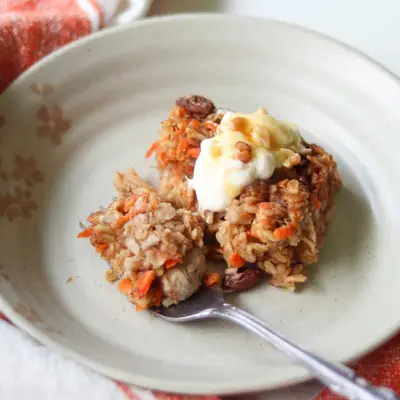

Carrot Cake Baked Oatmeal

Ingredients
- 2 medium overripe bananas
- 2 cups rolled oats (200g)
- 2 tablespoons peanut butter (or nut butter of choice)
- 1 tablespoon chia seeds (I love this brain booster mix) (use code "MIN20" for 20% off)
- 2 teaspoons ground cinnamon
- 1 teaspoon baking powder
- 1 cup grated carrots (about 2 medium carrots)
- 1/4 cup chopped walnuts
- 1/4 cup raisins
- 1 1/2 cups milk of choice
- 1 teaspoon vanilla extract
- Greek yogurt for topping
Steps
- Preheat the oven to 350°F (175°C). Lightly grease or line an 8 x 8-inch baking dish.
- Grate the carrots. Finely grated carrots blend right into the oatmeal, while coarsely grated carrots add more texture. We usually go with the larger grate. Set it aside.
- Add the bananas to the baking dish and mash them until smooth. Add the rest of the ingredients and stir everything together until well combined and easily distributed.
- Bake for 30–35 minutes, or until the center is set and the top is lightly golden.
- Let cool for 10–15 minutes before slicing. Serve warm or chilled with a dollop of Greek yogurt.
Recipe by Min Kwon · Kidfriendly Meals, from MJ and Hungryman. Saved here for personal use; the original has the full notes, tips and photos. Open original